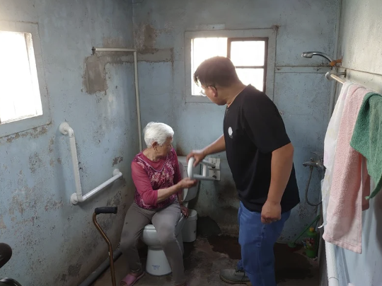

合作提案
把理念，變成長期的陪伴
可及環境的改變，從來不是一個人就能完成的事。 它需要願意多想一步的設計者、願意投入行動的夥伴，也需要默默支持的力量。 不論你是專業工作者、學生、企業或關心生活環境的一般大眾， 都能用自己的方式，加入我們的行列。
合作提案
一起，把可及變成正在發生的事
可及環境的改變，不會只靠單一角色完成。 它需要設計、教育、產業、政策與實務彼此串聯，也需要願意嘗試不同合作形式的夥伴。 台灣可及環境設計協會誠摯邀請各界單位與我們展開合作， 無論你是想「一起做一件事」、或只是「有資源想分享」， 我們都歡迎你主動與我們聯繫。

我們相信的合作方式
我們不把合作限制在單一模式，而是期待因應不同需求，共同設計適合的合作形式。 只要目標一致——
- 推動可及環境
- 提升社會對可及設計的理解與實踐
合作的方式，可以一起討論。可能的合作方向有：
一、課程與教育訓練合作
- 邀請協會講師進行可及環境相關課程、演講或工作坊
- 企業、機構、政府單位內訓與專業培力
- 校園、社區、產業端的教育推廣合作
二、專業交流與學習
- 建築、景觀、室內、工程、社福等專業團隊，希望深化可及實務
- 廠商、設計單位希望了解法規、實務案例與改善 know-how
- 共同規劃實務導向的學習與交流形式
三、教材與資源支持
- 提供輪椅、輔具、導盲設備等作為體驗或教學使用
- 支援體驗工作坊、環境檢測或教育活動
- 協助協會建立更完整的教學與示範資源
四、產學與跨域合作
- 與學校、研究單位進行產學合作或專題計畫
- 共同發展研究、示範案例或推廣計畫
- 參與學生競圖、展覽或成果發表相關合作
五、其他你正在想的合作可能
也許你有一個還沒完全成形的想法， 也許你只是覺得「這件事應該可以一起做」。 沒有關係，我們願意聽你說。
我們希望的合作夥伴
- 認同可及環境與共融社會的核心價值
- 願意以實際行動支持理念，而不只停留在口號
- 尊重不同使用者的需求與經驗
- 樂於對話、共同調整合作方式